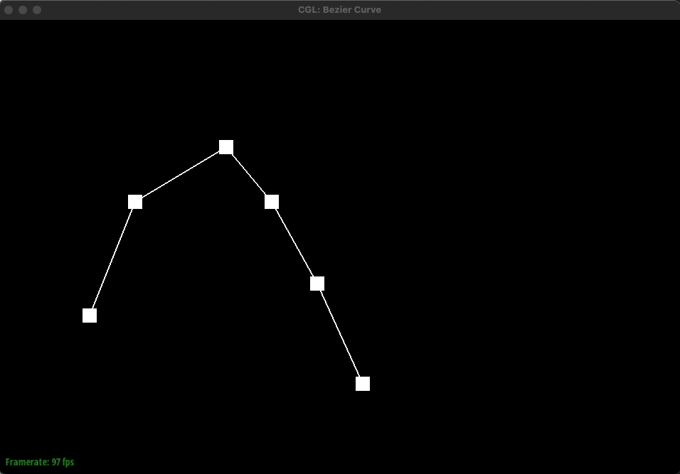
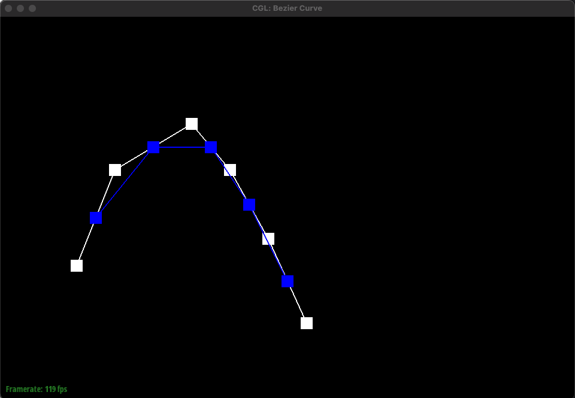
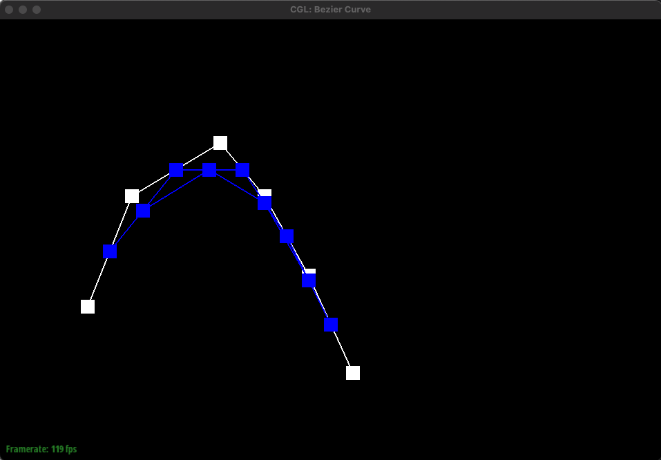
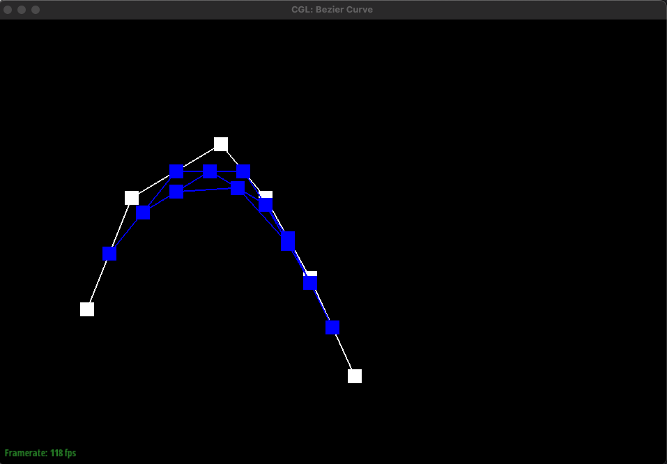
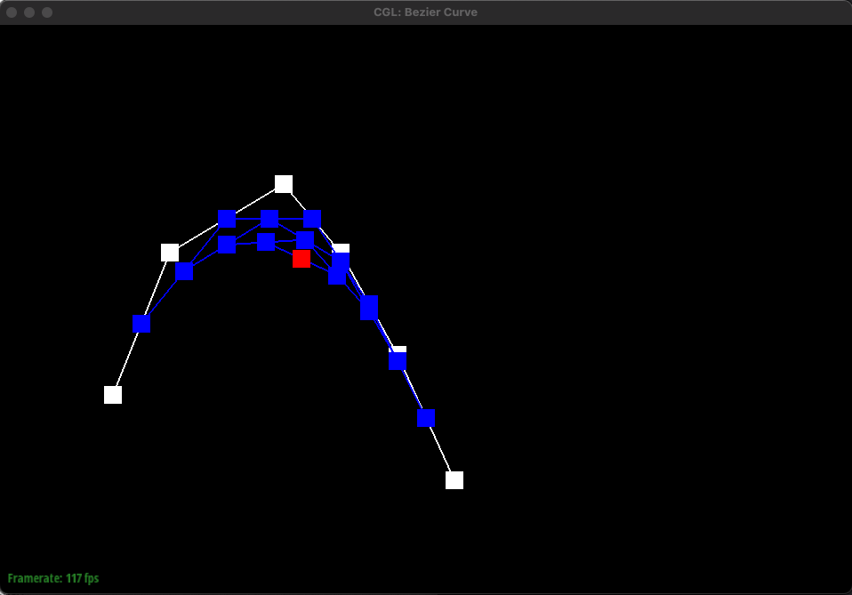
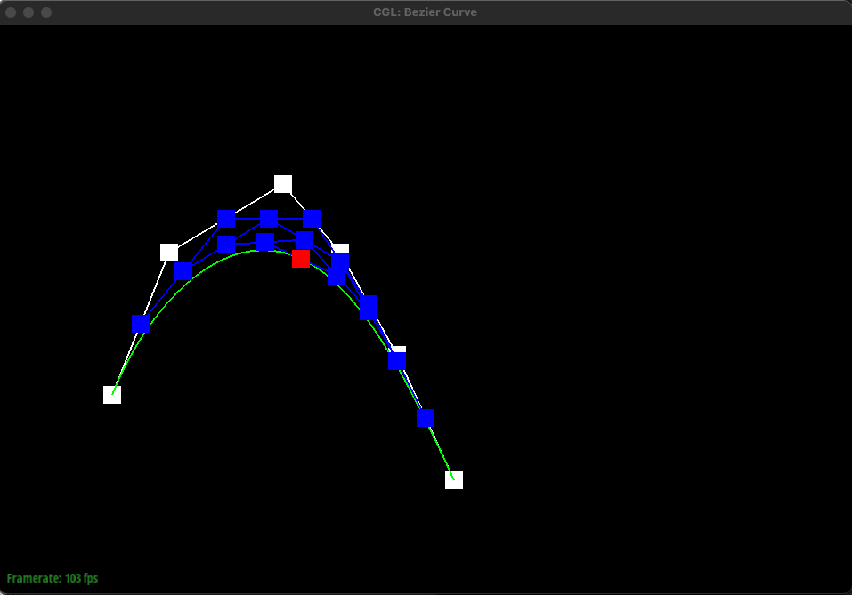
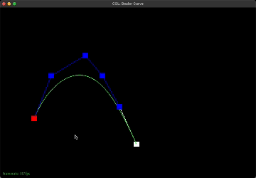

In this task, we implemented de Casteljau's algorithm for 1D which
is useful for finding Bezier curves.
de Casteljau's algorithm takes the given control points, inserts a
point using linear interpolation between each control point, and
does this recursively until we are left with only one point.
Essentially, it recursively finds intermediate control points
between each pair of given control points using linear interpolation
until only one point remains. This enables for a smooth curve.
The implementation is straightforward. Simply iterate through the
given control points, which is a list of points (x, y) and during
the iteration, perform linear interpolation between the current
point and the next point and add this interpolated point to a new
list of points. This new list containing intermediate points is
returned. Eventually, this new list will only contain one final
point that lies on the Bezier curve. This final point is the red
point shown below in the images.
|

Given 6 control points
|

evaluateStep is called once
|
|

evaluateStep is called twice
|

evaluateStep is called three times
|
|

evaluateStep is called four times
|

Final intermediate point with completed bezier curve!
|

when parameter t is changed
If we have 6 control points, we would have to do linear
interpolation 5 times to get 5 intermediate control points for the
first step of de Casteljau's algorithm. Then, with these 5 points,
we would have to do linear interpolation 4 times to get 4
intermediate points. This repeats until we have one final control
point as shown above in the images. Essentially, given n points,
we have to find n-1 intermediate points using linear interpolation
until we are left with one final point that lies on the Bezier
curve. This algorithm is used to find the bezier curve as
indicated by the green curve above.
The parameter t ranges from 0 to 1 and determines the position of
the final intermediate point. For example, when t = 0, this
corresponds to the starting point. In the gif above, it would be
the leftmost and bottommost point whereas when t = 1, this
corresponds to the last point which is the rightmost and
bottommost point. The parameter t essentially controls how far
along the curve the interpolated point should be.